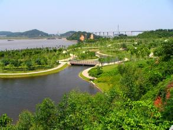
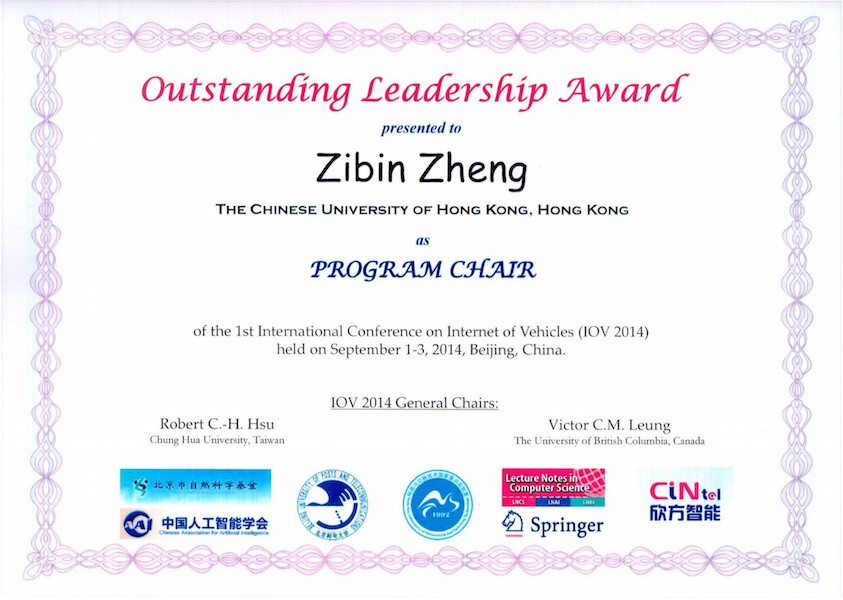

In+ Lab新闻 “内在美”与“外在美”的追求——香港中文大学吕荣聪教授讲座 2016年1月6日
2016年1月6日下午，受实验室与数据科学与计算机学院的邀请，ACM Fellow、IEEE Fellow、AAAS Fellow、HKIE Fellow、长江学者讲座教授、国际知名软件可靠性工程及软件容错技术学者、香港应用科技研究院学术顾问、香港中文大学计算机科学与工程系**吕荣聪**教授在中山大学开展了关于有关科研“内在美与外在美”的讲座。
吕教授风趣地以自己为例，从自己首先注意的是“外在美”过渡到之后关注“内在美”为切入点，提到了做科研“内容”的重要性，即科研“内在美”的重要性。随后吕教授在与现场如云的听众的互动中，不断地用深刻隽永的例子、平实的语言阐述了如何发现科研“内在美”，向大家揭秘了科研工作中一个学术问题的发现、定义与解决。他系统地介绍了“新问题新方法”、“老问题新方法”、“跨领域思考”等学术研究方法，并以实验室负责人郑子彬副教授为例子，具体地介绍了他创新的工作的过程与方法。
随后，吕教授又将主题引回“外在美”。在注重“内在美”的同时，他也强调了“外在美”的重要性，因为一个可发表的工作不仅要有坚实、创新的内核，还要能被细致、流畅地表达出来。吕教授以一张从不同角度来看内容完全不同的图片为例，向在场的听众们展现了一个客观事物是如何经过主观思考之后变成不同事物的过程，谈到了一篇论文在评审眼中也是如此，并引出了将论文写的可被接受(acceptable)的重要性，之后他教授了一些具体的方法以及经验总结，如“写好摘要(abstract)避免被第一眼否决”，在场的听众都受益匪浅。
讲座期间，吕教授不仅展现了一流的学术、专业素养还体现了学贯中西的渊博学识，既引经据典又能将深刻的学术道理蕴含于简单朴实的语言、例子中，在场听众都聚精会神、专心致志。最终，在大家热烈的掌声中，讲座圆满地划上了句点。
In+ Lab新闻 实验室元旦跨年之夜 2015年12月31日
2015年12月31日跨年夜，实验室举行了跨年电影欣赏会活动，活动由实验室的文娱组、财务组鼎力支持，大家一起吃着炸鸡喝着啤酒欣赏了大片，在欢乐的氛围中度过了2015年的最后一天。
注：为让实验室更有序、高效地运作，实验室成立了人事组、文娱组、财务组、卫生组、设备组、宣传组六大小组。每个小组各司其职又有机地合作，覆盖到了实验室生活的方方面面。
In+ Lab新闻 回首过去，展望未来——实验室年会 2015年12月23日
2015日12月23日晚，在圣诞、元旦、春节三大佳节来临之际，实验室举行了热闹非凡的年会聚餐活动。实验室从最初的小规模，到年会活动当晚已发展壮大到二十余人的团队。席间，实验室负责人郑子彬副教授不仅发表了鼓舞人心的新年祝词，更去到每个成员身旁关心了解个体的发展情况。筵席尾声，实验室还举行了抽奖活动，奖品从U盘到移动电源，再到大奖Kindle电纸书，拍立得，可谓琳琅满目，每个人也都高兴地抽到了礼物。聚餐结束后，尚未尽兴的成员们还组织了桌游活动、KTV唱歌活动。
在这欢乐愉快的气氛中，年会落下了帷幕。活动中，大家不仅感受到了家一般的温暖，还增进了相互的感情。通过活动，辞旧迎新，InplusLab也逐渐成长为了一个更具凝聚力、战斗力的团队。
In+ Lab新闻 实验室队伍在广东公共交通大数据竞赛中取得优异成绩 2015年12月15日
由阿里巴巴主办的 2015“数据引领 飞粤云端”广东公共交通大数据竞赛于2015年12月15日结束。比赛分为公交客流预测和市民出行公交线路选乘预测。由实验室的黄春振，杨亚涛同学经过一个月两个阶段的比赛，最终在1881支队伍中排名14名。期待实验室的同学在其他数据挖掘类比赛有更好的表现。
In+ Lab新闻 中国计算机学会理事长郑纬民教授开展学术讲座 2015年11月26日
2015年11月26日下午，受实验室及计算机学院的邀请，中国计算机学会理事长，计算机体系结构专业委员会副主任，高性能计算研究所所长，博士生导师，清华大学计算机系郑纬民教授在中山大学开展题为“大数据存储系统研究与实现”的讲座。
郑教授首先提出了“数据为中心，存储为中心”是当今发展趋势的观点，引出了本次讲座的主题。在对大数据存储的要求及总体概况进行介绍以后，又分三个方面阐述了几个关键的技术。分别为达到高可用性的多副本技术，容灾技术；达到低成本的分布式RAID技术，存储删冗技术以及达到高性能的存储阵列扩展方法，分级存储等。
郑教授在介绍理论的同时，结合了清华大学云存储MeePo的项目实例。详细地讲述了MeePo的很多细节，使听众在学习理论的同时，又能对其在实际的应用进行深入地了解，从而对理论有了更深刻的理解。把学术与项目进行结合，对同学们产生了很大的启发。
最后的提问环节，郑教授与同学围绕着大数据以及大数据存储进行了热烈而深入的讨论，圆满地结束了本次讲座。
In+ Lab新闻 973项目代表性成果汇报 2015年11月23日
2015年11月23日，国家973项目“高效可信的虚拟计算环境基础研究”在北京举行了结题验收汇报。郑子彬副教授向专家汇报了项目的二个代表性成果之一：“面向虚拟计算环境的服务质量预测与评估”。
In+ Lab新闻 “ACM广州新星奖” 及“ACM中国新星提名奖” 2015年10月21日
2015年10月21日，“2015年ACM中国颁奖典礼”在无锡举行。会上颁发了ACM在中国地区的两个重要奖项：“ACM中国新星奖”和“ACM中国最佳博士论文奖”。郑子彬副教授荣获“ACM中国新星提名奖”，同时获得“ACM广州新星奖” 。2014年图灵奖获得者Michael Stonebraker，ACM主席Alex Wolf以及ACM首席执行官Robert Schnabel共同为获奖人颁奖。
为表彰中国计算机领域的青年学者所取得的研究成绩，从2014年起，ACM（世界计算机学会）设立“ACM中国新星奖”，每年评选出1-2名在计算机领域展现出突出科研潜力的青年学者为获奖者及1-2名提名奖。
In+ Lab新闻 实验室举行科普论文大赛颁奖仪式 2015年9月9日
9月9日，实验室举行了科普论文大赛颁奖仪式。经过评选，伍鹏飞，孟静珂及郭力维同学分获一二三等奖以及Kindle，智能手表等奖品。其他参赛者获得计算机相关图书。
科普论文大赛由本实验室举办，目的在于加深大家对本领域知识的理解，提高深入浅出地阐述科学理论的能力。同时，参赛的作品也会成为日后大家学习的良好教材。
In+ Lab新闻 973项目验收会顺利举行 2015年9月8日
2015年9月8日，国家重点基础研究发展计划（“973计划”）“高效可信的虚拟计算环境基础研究”课题验收会在国防科技大学顺利举行。国防科技大学卢锡城院士、总参谋部第61研究所李德毅院士、北京邮电大学方滨兴院士、南京大学吕建院士、清华大学郑纬民教授、北京航空航天大学钱德沛教授、西安电子科技大学马建峰教授、武汉大学何炎祥教授、中科院计算所刘志勇教授、华中科技大学金海教授、上海交通大学过敏意教授、西北工业大学周兴社教授、国防科技大学刘波教授、国防科技大学刘学民政委、国防科技大学李翼鹏参谋、国防科技大学苏金树副总工、国防科技大学窦勇副主任、科技部基础研究管理中心粱超博士、等专家、领导莅临会议。与会专家充分肯定该项目的成果，对项目研究给予认真评议。
In+ Lab分享 李阳及陶冠宏同学香港中文大学交流心得分享 2015年9月2日
In+ Lab喜讯 谢凡，崔嘉辉同学获阿里中间件性能挑战赛三等奖 2015年8月26日
8月26日，阿里中间件性能挑战赛决赛答辩在杭州举行。本实验室谢凡，崔嘉辉同学及信科院徐晓欣同学组成的队伍在一千支参赛队伍中脱颖而出，进入全国十强，并在杭州展开最后十强对决。取得三等奖的成绩，并斩获三万元奖金。
该比赛共有来自224所高校近千支队伍报名参加，赛题从世界最复杂场景中抽象而出。竞争十分激烈，旨在发掘互联网工程领域顶级人才。
In+ Lab新闻 实验室举行全体成员聚餐活动 2015年8月25日
8月25日晚，实验室举行了一年一度的全体成员聚餐活动，大家在享受丰盛的晚餐的同时，不仅放松身心，更增进了实验室成员间的友谊，充分体现了实验室“快乐科研”的宗旨，为建设良好的实验室氛围打下基础。
餐饱饭足后，大家齐聚KTV，一展歌喉，释放压力，将工作的疲劳心情一扫而空，为接下来的紧张有序的学习工作做好充分的准备。
In+ Lab喜讯 实验室队伍进入天池大数据大赛总决赛 2015年8月25日
由阿里巴巴主办的天池大数据大赛日前落下帷幕。由实验室杨亚涛，谢凡，刘家豪同学组成的队伍经过第一赛季，第二赛季Part1、及第二赛季Part2等三个阶段的层层筛选，在4868支队伍中排名前1%，进入了最终决赛。期间最好成绩达到前十余名。
本次大赛主题为资金流入流出预测，举办方为蚂蚁金服。大赛旨在选拔大数据挖掘方面精英人才。
In+ Lab新闻 兰州大学范晓亮博士莅临本实验室交流访问 2015年8月20日
8月20日下午，中法软件协会副会长，中国计算机学会CCF兰州分部秘书长，兰州大学助理教授范晓亮博士来到本实验室交流访问，并做了交通大数据挖掘相关的学术报告。
范晓亮博士详细地介绍了其厦门市交通大数据挖掘方面的工作，针对城市中各方面交通数据（如电子眼拍照数据，车量分时流量数据，交通事故数据等）如何整合及利用进行了细致的解读，更对其在交通事故数据处理及分析方面开创性的研究进行了解释，并对同学的提问进行了详尽的解答。使同学们对该领域有了更加全面的认识。
In+ Lab新闻 微信团队大数据技术代表到访实验室 2015年8月18日
8月18日下午，来自腾讯微信团队多位数据分析方面技术人员到访本实验室交流访问。与实验室成员就大数据挖掘，社交网络等方面展开了交流。
In+ Lab喜讯 恭喜黎坤旻同学获“CCF优秀大学生奖” 2015年8月5日
8月5日，2015年度CCF优秀大学生奖获奖者名单公布。实验室黎坤旻同学荣获该奖，并由CCF全额资助赴合肥参加本年度中国计算机大会。
CCF优秀大学生奖项是由中国计算机学会在2012年发起，获奖同学由67所高校及22位理事联名推荐，并由评审工作组对推荐材料严格审核产生。
In+ Lab新闻 实验室成功获得创意基金资助 2015年7月30日
7月30日，CCF-腾讯犀牛鸟基金获奖结果发布，实验室申报的项目“基于跨领域的用户画像和推荐系统研究”成功获得创意基金资助。
CCF与腾讯于2013年合作发起犀牛鸟基金以来，已有来自海内外150多所高校及科研院所的500位青年学者提交申请。青年学者们在该基金搭建的平台上已申请国际国内专利50余例，发表高水平学术论文80余篇。
In+ Lab新闻 中国电信及中国移动大数据技术代表到访实验室 2015年7月22日
7月22日下午，来自中国电信及中国移动的多位大数据分析技术人员莅临本实验室交流访问。与实验室成员就大数据挖掘等方面展开了交流。电信及移动技术人员分别介绍了运营商在数据挖掘领域之现况。
In+ Lab新闻
李阳同学受邀参与平安科技首届大学生互联网金融技术高峰论坛 2015年6月11日
2015年，在“互联网＋”浪潮的洗礼下，更多智慧想象将无限连接，平安科技打造首届大学生互联网金融技术高峰论坛－哈尔滨、西安、广州三地巡回论坛在5月11日起全面启动，于6月11日来到了广州站。
实验室的李阳同学受平安科技邀请参与了论坛“踢馆”演讲，以“大数据，然并卵”为题在演讲中提出了“大数据是一种模式”以及将来在大数据情况下数据挖掘的“Sample”方法，以更“Sample”而不是“Simpler”的方式解决大数据时代面临的一系列问题，从中快速有效的挖掘出价值，演讲中阐述了这些原生态又十分新颖的思考，在现场中与大家以及评委进行了很多互动、探讨了很多问题，最终，获得了广州地区的最佳踢馆奖，获得由平安科技提供的kindle学习大礼包及秋季校招直通复试卡！
In+ Lab新闻
伍鹏飞同学受邀参加法学院2015年毕业晚会演出 2015年6月6日
2015年6月6日晚七点，中山大学法学院在东校区新学生活动中心举行了送旧舞会，即将告别大学阶段的毕业生同学们欢聚一堂。
本实验室伍鹏飞同学受邀参演。为表演嘉宾廖同学演唱的『千千阙歌』吉它伴奏，并倾情弹唱了一首『姑娘』。将大家带入了当年青涩又美好的回忆。
相聚的最大意义是别离后的回忆，我们以一生的尺度去丈量我们的友谊。韶华未逝，我们的青春永不散场。
In+ Lab新闻 国际服务学会中国青年科学家论坛年度大会成功举办 2015年5月30日
5月30日，国际服务学会中国青年科学家论坛在金蝶国际软件集团成功举办。与会人员包括来自北京大学、北京邮电大学、北京外国语大学、北京科技大学、天津大学、复旦大学、武汉大学、华中科技大学、湖南科技大学、海南大学、内蒙古大学、中山大学等来自全国各地的30多位青年教师及科研人员。金蝶国际软件集团高级副总裁/首席科学家张良杰博士及中国旅美科技协会总会会长/国际服务学会总裁陈志雄教授为本次大会致辞。国际服务学会中国青年科学家论坛主席郑子彬博士做了年度总结。
In+ Lab新闻 第三届中国大数据产业峰会成功举办 2015年5月29日
5月29日, 第三届中国大数据产业峰会暨第四届IEEE国际大数据大会深圳分会在清华大学深圳研究生院隆重举行，吸引了近500位互联网行业及大数据领域的企业家、学者、投资人、银行家以及房地产、金融、医疗、教育、服务等多行业的企业家代表出席参会。本次峰会由深圳大数据产学研联盟、IEEE计算机学会 (IEEE Computer Society)、国际服务学会(Services Society)、中国计算机学会深圳分部(CCF深圳)主办，并得到深圳市南山区科技创新局（科协）、腾讯、华为、金蝶、中兴华大基因、华傲数据、中科院、创+空间、思睿产业研究中心、深圳创客基地、国家信息中心软件评测深圳中心以及深圳市大数据研究与应用协会的大力支持。郑子彬博士担任第四届IEEE国际大数据大会深圳分会的大会主席及创客大赛的评委，从近百家数据创客参赛团队中精选出“行动流”、“宜出行”、“易户外”、“随手赚”、“易奉亲”、“舒糖”、“美妆魔镜”及“智宠家”八大最具代表和创新的数据创客项目为参会代表带来精彩纷呈的现场演示和奖项角逐。最终“宜出行”、“舒糖”和“随手赚”三个项目在激烈的交锋中以突出的表现分别获得了由IEEE国际大数据大会、国际服务学会、深圳大数据产学研联盟联合发布技术创新奖、商业模式奖、团队创新奖等三大奖项。
In+ Lab新闻 实验室孟静珂同学本科毕业论文被评为优秀论文 2015年5月21日
本实验室孟静珂同学题为《基于概率矩阵分解的移动应用个性化推荐研究》的本科毕业论文被评为优秀论文。
论文结合传统的个性化推荐方法，提出了「结合邻居信息的概率矩阵分解」的方法来解决移动应用的个性化推荐问题，并基于工业界的真实数据做了详细的实验验证工作。
In+ Lab招生 阿里巴巴大数据竞赛队员招收通知 2015年4月29日
阿里巴巴大数据竞赛又称天池大数据竞赛，是由阿里巴巴集团主办，面向全球新生代力量的高端算法竞赛。通过开放海量数据和“天池”分布式计算平台，大赛让所有参与者有机会运用其设计的算法解决各类社会生活问题和商业世界中的实际问题。实验室拟组建队伍参加天池大数据竞赛，旨在提升学生的数据挖掘和算法应用能力，培养更多专业人才。实验室将为报名的同学提供良好的理论指导、一流的研究环境、及高效的大数据处理平台，帮助参赛同学快速成长、取得良好成绩。有意向的同学请将简历发送到 inpluslab@yeah.net 邮箱。
In+ Lab喜讯 实验室多篇论文被IEEE Transactions评为最受欢迎论文（Popular Paper） 2015年4月29日
实验室的多篇期刊论文被国际顶级期刊评为最受欢迎论文（Popular Paper），具体包括IEEE Transactions on Parallel and Distributed Systems (分布式计算领域顶级期刊，CCF A类期刊)、IEEE Transactions on Computers (计算机领域顶级期刊、CCF A类期刊)、IEEE Transactions on Services Computing (服务计算领域顶级期刊、CCF B类期刊)等。该评选是IEEE根据论文的下载次数等指标自动计算出来的，每月进行动态更新。实验室的多篇文章在IEEE的Popular Paper列表中长期名列前茅，研究工作获得国际同行专家的广泛下载及引用。
In+ Lab新闻 实验室参与IEEE大数据领域的知识体系（Body of Knowledge）制定工作 2015年4月28日
实验室有幸参加了IEEE关于大数据领域的知识体系（Body of Knowledge）制定工作。知识体系（Body of Knowledge）是由领域专家共同制定的一套完备的覆盖该研究领域各个研究方向的标准大纲。大数据作为一个新兴研究领域，其知识系统的制定工作对于整个领域的发展具有重要的作用。实验室因为在服务质量（Quality-of-Service，QoS）方面的研究成果获得国际同行的广泛认可，被邀请参与IEEE大数据知识体系（Body of Knowledge）中服务质量相关的制定工作。
In+ Lab征稿 IEEE BigData Congress 2015 2015年4月28日
The IEEE BigData 2015 Shenzhen Satellite Session focuses on the Big Data and Services. The major topics include but are not limited to: Big Data Infrastructure-as-a-Service, Big Data Platform-as-a-Service, Big Data Analytics-as-a-Service, Business Aspects of Big Data-as-a-Service, Service Generated Big Data Mining, Analysis and Application, Big Data-Related Service Development, Deployment, Discovery and Selection. The Shenzhen Satellite Session will include research paper presentations and visits to selected interesting places in Shenzhen.具体信息查看：http://www.ieeebigdata.org/2015/Shenzhen.html
In+ Lab征稿 International Journal of Services Computing
The International Journal of Services Computing (IJSC) is a refereed, international publication aiming to be a core resource providing leading technologies, development applications, empirical studies, and future trends in the field of Services Computing.具体信息查看：http://www.hipore.com/ijsc/index.html
In+ Lab活动 运动大比拼 2015年4月26日
实验室注重科研的同时也注重身体的锻炼，好的身体是进行科研的最大保障。为了鼓励大家积极锻炼，实验室购买了一批小米手环，实验室成员可利用小米运动记录自己每天的步数，接入微信小米公众号可以在线PK。通过这种形式极大鼓舞了实验室成员的运动热情。
In+ Lab合作 与北京大学合作并成立移动互联网技术联合研究小组 2015年4月23日
围绕移动应用的分析，实验室与北京大学建立紧密合作关系，建立联合研究小组，并且就研究进展情况，定期进行会议交流与讨论。与北京大学的合作为实验室成员扩展思路、提升学术研究水平提供很好的支持。
In+ Lab喜讯 新实验室装修完毕 2015年4月18日
新实验室的搬迁与装修工作已完成。新的实验室位于中山大学东校区南实验楼D203, 实验室设有专门的会议室、休息区、阅读区、工作区等。
In+ Lab活动 周五电影夜 2015年4月10日
实验室在注重科研的同时也很注重实验室成员的娱乐放松，由于每天都面对高强度的脑力劳动，适当的娱乐能够放松自我、缓解疲劳。为了增进团队感情，创造良好的团队氛围。实验室每周五都会举办电影夜活动。
In+ Lab交流 李阳、陶冠宏同学今夏将赴香港中文大学交流实习 2015年3月9日
实验室有多项对外交流计划，实验室成员可到香港中文大学、香港中文大学深圳研究院、北京大学、浙江大学等合作机构进行交流实习。今年夏天，实验室成员李阳、陶冠宏以他们优异的表现，获得到香港中文大学交流实习2个月的机会。实验室浓厚的对外交流合作的氛围，有效地开阔了实验室成员的国际视野、为实验室开展一流学术研究奠定良好的基础。

李阳

陶冠宏
In+ Lab活动 大学城环岛游 2015年3月7日

为了丰富实验室成员周末生活，实验室举行了大学城环岛游活动。实验室成员通过骑自行车的形式环岛游玩，呼吸大自然的清新空气，感受珠江的美丽壮阔。环岛骑行活动不仅能够使成员身心得到放松，还能强健体魄，更能增进实验室的凝聚力。
In+ Lab新闻 “973”青年科学家专题项目2014年度总结会举行 2014年12月25日
2014年12月25日，国家重点基础研究发展计划（“973计划”）青年科学家专题项目“基于情境的安全攸关软件的构造方法与运行机理研究”2014年度总结会在北京西郊宾馆举行。北京大学信息科学技术学院何新贵院士、梅宏院士，北京航空航天大学中德联合软件研究所所长钱德沛教授，日本国立情报研究所教授、北大信息科学技术学院“长江学者奖励计划”讲座教授胡振江，南京大学计算机科学与技术系李宣东教授，清华大学软件学院副院长王建民教授，中国科学院软件研究所张健研究员，北大信息科学技术学院软件研究所副所长黄罡教授，科技部基础研究管理中心谢夏博士等专家、领导莅临会议。与会专家充分肯定该项目的目前进展，对项目研究的开展情况给予认真评议和充分讨论，并对项目如何进一步凝炼研究内容、寻找落地应用场景等提出了建议。
In+ Lab交流 湖南科技大学曹步青副教授来访 2014年10月31日
2014年10月31日，湖南科技大学曹步青副教授到实验室访问，曹步青副教授主要研究领域为服务计算与云计算、社会网络与软件工程等。并担任湖南科技大学信息安全系副主任。近年来，在国内外重要学术期刊以及国际学术会议上发表论文近40篇，其中被SCI/EI检索30余篇。主持国家自然科学基金、湖南省自然科学基金等各类项目7项。获得国家软件著作权3项。曹步青副教授访问实验室期间参加了研究生组会讨论，在会上给出了许多宝贵的意见和建议。
In+ Lab新闻 第二届中国大数据产业峰会成功举办 2014年5月30日
5月30日下午，“2014年IEEE国际大数据大会深圳分会暨第二届中国大数据产业峰会”在香港中文大学深圳研究院隆重召开。本次峰会由IEEE计算机学会、国际服务学会、中国计算机学会深圳分部、深圳大数据产学研联盟、香港中文大学等多家单位联合举办。郑子彬博士担任大会程序委员会主席，并负责此次峰会的整体组织协调工作。本次峰会特邀国内外顶尖科学家和企业专家莅临演讲，吸引了近500位产学研各界人士参会。大会的演讲环节精彩纷呈。卡内基梅隆大学讲座教授丹尼尔教授（美国工程院院士、AAAS/ACM/IEEE Fellow）首先做了“生活质量技术工程研究中心概述”的演讲，着重探讨了大数据在生命质量技术和用户活动智能监控系统方面的应用情况。香港中文大学常务副校长华云生教授（AAAS/ACM/IEEE Fellow）在大数据的关键特性（容量﹑速度﹑多样性和准确性），以及它们与科学和工程上的应用的关系方面展开了探讨分析。腾讯公司副总裁别洪涛先生，华为技术有限公司副总裁周芜先生（IEEE Fellow）也分别作了主题为“承载大数据之互联网数据中心介绍”以及“软件定义网络与大数据”的精彩演讲。香港中文大学吕荣聪教授（AAAS/IEEE Fellow、长江学者讲座教授）及金蝶国际软件集团高级副总裁兼首席科学家张良杰先生（IEEE Fellow，千人计划）主持了本次大会。
In+ Lab喜讯 服务计算学会青年中国分会成立 2014年5月30日
5月30日，国际服务学会青年委员会中国分会隆重揭牌。国际服务学会青年委员会是国际服务计算领域的青年组织，成员由来自全世界的服务计算研究领域的青年科研人员组成，目前中国分会已经凝结了超过50所科研院校的200多位青年教师及科研人员。郑子彬博士被委任为中国分会的创始主任（Founding Chair），负责全面组织国际服务学会青年委员会在中国的工作。
In+ Lab喜讯 IOV2014 Outstanding Leadership Award 2014年3月1日
IOV是国际车联网旗舰会议，旨在分享车联网的研究成果、发展趋势以及核心技术。IOV2014于2014年9月3号在北京举办，郑子彬博士担任大会的程序委员会主席，并荣获Outstanding Leadership Award。

In+ Lab喜讯 “973计划”青年科学家专题项目获批 2013年12月11日
近日，科技部公布了国家重点基础研究发展计划（“973计划”）2014年启动的160个项目。青年科学家专题项目《基于情境的安全攸关软件的构造方法与运行机理研究》获批，获得经费支持500万人民币。 该项目的首席科学家为北京大学熊英飞研究员。
In+ Lab新闻 YOCSEF在长沙举办“服务计算最新研究进展”专题报告会 2013年5月13日
2013年5月12日(星期日)下午2:30，CCF-YOCSEF长沙在湖南科技大学逸夫楼501举行了主题为“服务计算最新研究进展”的专题报告会。本次报告会由CCF-YOCSEF长沙候任主席国防科技大学李东升博士、AC委员湖南科技大学唐明董博士、委员湖南科技大学曹步清博士共同主持。参加此次报告会的AC委员有国防科技大学毛新军、董威，中南大学王国军、李登，湖南大学李肯立、唐卓，湖南师范大学张连明，湘潭大学欧阳建权；委员有湖南科技大学刘毅志、周栋，中南林业科技大学邝祝芳，湖南工大学满君丰等；新申请加入CCF YOCSEF长沙委员3人；以及湖南科技大学计算机学院部分师生。
本次报告会围绕“服务计算最新研究进展”这一主题，首先吴健教授做了题为“Mining and Exploring Data in Service Computing”的报告。接下来，郑子彬博士做了一场题为“QoS Management of Service Computing”的报告。首先，郑博士从服务的定义，服务计算的工作模型，及服务计算给我们生活带来的巨大改变切入，简洁直观地说明了Web服务QoS评估、预测，容错研究的意义。接着，郑博士从以上三个方面展开，详细地介绍了他在过去几年所开展的研究工作。其中包括他们提出的一个全球分布式Web服务QoS评估框架，五种基于不同理论的QoS预测方法，及两种Web服务容错方法。报告会后，全体参会者就相关问题进行了热烈的讨论。
In+ Lab新闻 A New Open Access Journal--International Journal of Services Computing (IJSC) 2013年5月1日
IJSC是由国际服务学会主办的国际学术刊物，旨在成为该领域的国际权威杂志并提供服务计算领域领先的技术、应用及发展趋势。郑子彬博士因其在互联网及Web服务领域的杰出研究成果，受邀担任该期刊的副主编（Associate Editor-in-Chief）。
In+ Lab喜讯 A Book was Published by Springer 2013年4月1日
郑子彬博士书写的英文学术专著《QoS Management of Web Services》 由德国斯普林格出版社出版，斯普林格Springer出版社是世界上最大的科技出版社之一，它有着150多年发展历史，以出版学术性出版物而闻名于世。